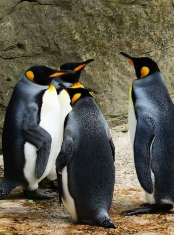
Image by PollyDot from Pixabay
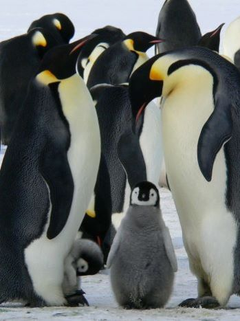
Image by MemoryCatcher from Pixabay
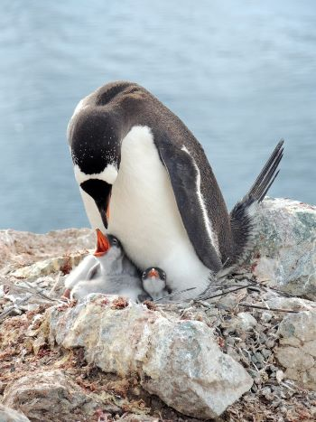
Image by clara5656 from Pixabay
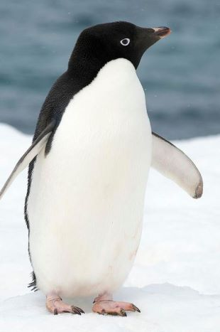
Image by Christopher Michel from The Australian Museum
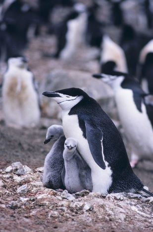
Image from Pixabay
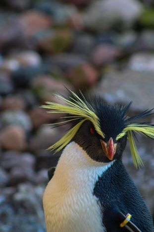
Image by Ethan Ridell from Pixabay
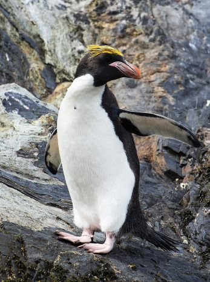
Image by Godot13 from Wikimedia Commons
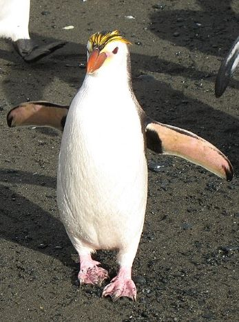
Image by M. Murphy from Wikipedia
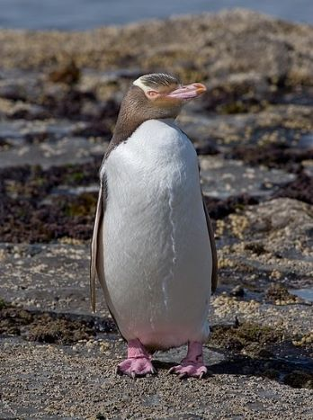
Image by Christian Mehlführer from Wikimedia Commons
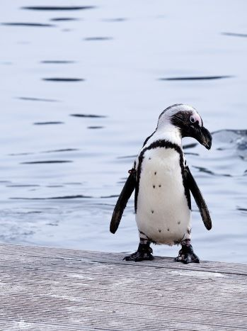
Image by Fofent from Pixabay
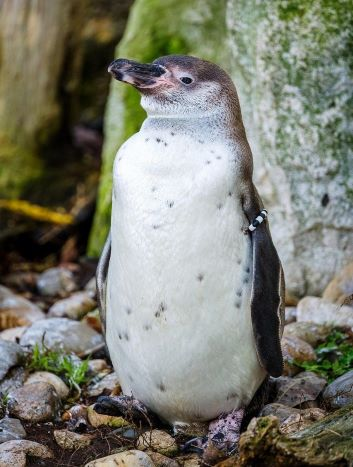
Image by Gregor Mima from Pixabay
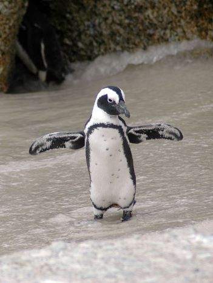
Image by Brigitte Werner from Pixabay